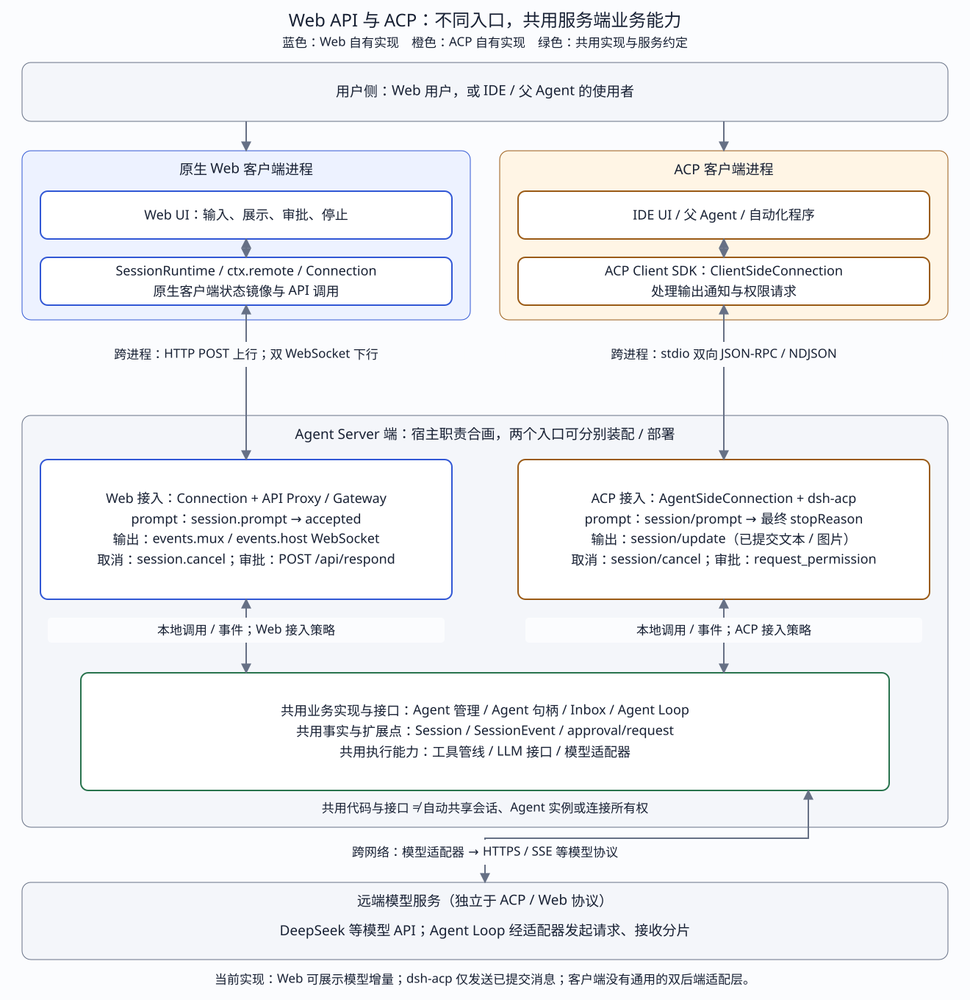

← 课程首页 · 第 15 课：Agent Server · 第 16 课：Web Client
DEEPSEEK HARNESS · WEB API × ACP
两套接入，统一在哪里？
Web API × ACP 领域对照
从用户操作一路追到模型端：Web 和 ACP 各自处理网络消息、输出和结束语义，在服务端复用 Agent、Inbox、Session、工具与审批扩展点。
当前统一点是服务端业务接口与实现。Web UI 消费 SessionRuntime / ctx.remote；ACP 客户端消费 ACP SDK。当前没有让同一套 UI 任意切换两者、且语义完全等价的通用后端接口。dsh-acp 本身就是 Host 内部插件，它到 Agent 的调用不是第三套网络协议。
源码核对：2026-10-21；DeepSeek Harness 固定为 99f6f02fecdb7dff40c3fbc9470f5907c29f74ca，ACP SDK 为 0.25.1。本文描述该快照，不套用在线最新版的 controller / follow / page 结构，也不描述 harness-lab 的教学 RPC / SSE 实现。两个接入入口按职责合画，可以分别装配在不同 Host 进程；共用实现不表示默认同时启用，也不表示它们共享同一个 Agent 或会话。
一张总图：上方各自接入，下方复用运行时


例如用户说“读取 README，解释项目”：网页把操作送到 Session.prompt()，IDE 可以送到 ClientSideConnection.prompt()。两条入口最终都能形成 Harness 用户消息并调用 agent.followup()；Loop 不需要知道这条消息来自 HTTP 还是 ACP。客户端如何观察过程、何时把调用视为完成，仍由各自入口定义。
pi-ai、ACP SDK、Web API：核心区别与各自解决的痛点
这里的 Web API 特指 DeepSeek Harness 的原生 Web API，不是泛指所有基于 HTTP / WebSocket 的接口。三者位于不同接入位置：pi-ai 接模型，ACP SDK 帮助实现标准 Agent 交互，原生 Web API 暴露 Harness 的产品业务能力。
| 对比项 | pi-ai | ACP SDK | Harness 原生 Web API |
|---|---|---|---|
| 是什么 | @earendil-works/pi-ai 是具体的 TypeScript / JavaScript 模型调用库，通过 npm 发布。 | ACP 是通信协议；@agentclientprotocol/sdk 是帮助客户端和 Agent 实现该协议的代码库。 | Harness 自己提供的一套产品业务接口，包括普通 RPC、Remote 调用和下行事件流。 |
| 连接谁 | Harness / 应用 ↔ 模型服务。 | 外部客户端 / IDE / 父 Agent ↔ Agent 服务端。 | Web 客户端 ↔ Harness Host。 |
| 核心痛点 | 模型厂商的请求参数、消息结构、工具调用、推理内容和流式事件存在差异，应用逐家适配容易重复劳动。 | 不同 Agent 各自定义接入方式，客户端需要逐家适配；共同协议让参与方复用会话、通知、权限和取消等交互约定。 | 自己的界面需要完整操作 Harness：会话历史、配置、队列、steer、审批、目标和实时执行状态都有具体业务语义。 |
| 主要提供什么 | Provider / Model 集合、鉴权解析、请求转换、流式解析、用量与结束原因归一化，以及历史消息转换等模型适配能力。 | 两端连接、JSON-RPC 请求 / 响应匹配、通知分发和协议类型；业务方仍需实现 Agent / Client 处理函数及能力声明。 | 按 Harness 领域组织的操作与事件，以及配套的 SessionRuntime / ctx.remote 等客户端调用面。 |
| 工具相关职责 | 把工具定义送给模型，解析模型提出的工具调用。工具的实际执行仍由调用方的 Agent 运行层负责。 | 协议可表达工具活动、权限请求，以及 Agent 请求客户端提供文件 / 终端操作；当前 dsh-acp 没有接出全部可选能力。 | 为原生客户端提供工具过程的观察、审批和相关控制；实际工具仍在 Harness 的工具管线中调度。 |
| 统一方式 | 库内部编写厂商适配器，对调用方提供统一接口；模型厂商无需专门支持 pi-ai。 | 客户端与 Agent 主动遵守共同协议；SDK 不会自动把任意私有 Web API 转换成 ACP。 | 客户端按 Harness 的接口约定接入。其他产品也可以直接适配；若将其作为共同标准维护，同样可以实现互操作。 |
| 主要收益与适用场景 | 复用模型适配代码，减少应用接入多个模型服务的维护成本。 | 复用已有 ACP 客户端 / Agent 的接入逻辑，方便跨产品集成；协议扩展需要双方额外支持。 | 自有客户端直接使用完整业务能力；只接 Harness 时通常不需要额外增加 ACP 桥接。 |
| 与 Agent 运行层的关系 | 单独 pi-ai 不等于完整 Agent。Pi 项目另有 Agent 运行层；Harness 在这里使用自己的 Agent / Loop。 | SDK 提供通信设施；会话所有权、任务推进、工具执行和完成判断由服务端业务实现决定。 | 原生 API 把请求连接到 Harness 业务服务，并对客户端暴露相应操作和状态。 |
支持 ACP 的客户端 ── ACP SDK ── dsh-acp 桥接 ──┐
├─ Harness Agent / Loop
Harness Web 界面 ── Harness 原生 Web API ────────┘ ├─ 工具管线 → 文件 / Shell 等插件
└─ LLM 服务 → pi-ai 或其他适配器 → 模型服务例如“运行测试并修复失败”：ACP SDK 负责把外部客户端的任务交给 Agent 并传递输出 / 权限交互；原生 Web API 负责让自有界面操作任务并观察更完整的产品状态；pi-ai 负责底层模型请求和返回事件的适配。工具执行、会话管理和反复调用模型推进任务由 Harness Agent / Loop 承担。三者各自可替换：使用 ACP 不要求使用 pi-ai，使用 pi-ai 也不要求通过 ACP 接入。
pi-ai 部分以本地适配插件及锁文件对应的 0.82.1 为依据。它是具体实现，不是另一个通信协议，也不需要为了库调用单独启动 pi-ai 服务；当前 dsh-llm-pi-ai 使用 Models.streamSimple()，再将返回事件转换为 Harness StreamChunk。
源码：pi-ai 依赖声明 · Models 集合与 streamSimple 调用 · 事件转换 · Harness Agent / Loop · dsh-acp 桥接 · 原生 Web API 清单。
接入选型 QA：兼容什么、为什么提供 ACP、能否直接用 Web API？
Q：可以理解成“pi-ai 接不同模型，ACP SDK 是不同 Web API 的兼容层，Web API 是裸 Agent 调用层”吗？
第一句准确，后两句需要调整。pi-ai 是模型适配库；ACP SDK 帮助实现统一的 Agent 通信约定；Harness Web API 是完整的产品业务接口。
ACP SDK 不认识任意 Agent 的私有 Web API，也不会自动把这些接口转换成 ACP。每个 Agent 都需要主动实现 ACP 接入：可以直接接内部 Agent 能力，也可以自行编写 ACP → 私有 Web API 的适配层。当前 Harness 的 dsh-acp 直接调用内部 Agent 能力，不绕经原生 Web API。
原生 Web API 也不只是“裸 Agent 调用”：它包含会话、历史、工作区、配置、队列、目标、交互应答和实时状态等产品能力。传输使用 HTTP / WebSocket，并不意味着业务语义比 ACP 更少。
Q：DeepSeek Harness 自己已经有 Web API，为什么还要适配别的？
在 dsh-acp 这条服务端接入链路中，Harness 做的是把自己的能力接到共同协议上，方便外部客户端调用自己。例如某个 IDE 已经支持 ACP，Harness 提供 ACP 服务端后，就可以复用该 IDE 现有的接入逻辑，而不要求它再专门了解 Harness Web API。
这条收益来自共同采用的约定。其他 IDE / 程序也完全可以直接适配 Harness Web API；ACP 本身没有使这种接入成为可能的独占技术能力。这里讨论的是 dsh-acp 对外提供服务的用途；仓库另有 dsh-subagent-acp 作为客户端调用外部 ACP Agent，属于另一条调用方向。
如果只服务自己的 Web 界面，原生 Web API 已经足够。提供 ACP 是为跨产品集成增加一个可选入口。两入口复用运行时实现，不表示默认同时启用，也不表示自动共享已有会话。
Q：为什么不可以直接使用 DeepSeek Harness 的 Web API？
完全可以。自己开发客户端、只接 Harness，并希望使用完整产品能力时，直接调用原生 Web API 就合适。ACP 不是调用 Harness 的前提，也不需要为了使用 pi-ai 增加这一层。
| 场景 | 接入选择 | 依据 |
|---|---|---|
| 控制客户端，只接 Harness | 直接适配 Harness Web API。 | 可按需使用完整业务功能，无需额外增加协议映射。 |
| 使用已有的 ACP 客户端 | 使用 dsh-acp。 | 复用客户端已有接入；先确认当前桥接提供的能力是否够用。 |
| 同一客户端要接多个支持 ACP 的 Agent | 复用 ACP 标准交互；按能力处理差异。 | 减少各家专用接入代码；专属扩展仍需单独支持。 |
| 其他产品愿意直接适配 Harness | 也可以直接使用 Harness Web API。 | 标准协议的收益是复用共同约定，不构成使用私有业务接口的技术门槛。 |
不要把 Harness 原生 Web API 与 DeepSeek 模型推理 API 混为一谈：前者调用带会话、工具和任务执行能力的 Harness；后者调用模型，仍需调用方提供 Agent 运行层。
领域、进程与所有权分别是什么？
| 领域 / 层 | 原生 Web | ACP | 共用程度 |
|---|---|---|---|
| 用户与客户端业务 | 浏览器 UI 组件展示消息、工具、问题、队列与配置。 | IDE 可展示结果；父 Agent / 自动化客户端也可只收集结果。 | 不是同一套客户端；“用户 UI”与“ACP Client”不是两个必然独立的部署服务。 |
| 客户端状态与调用 | SessionRuntime / WorkspaceRuntime、ctx.remote 与 Connection。 | ClientSideConnection，业务实现 Client.sessionUpdate / requestPermission。 | 各自实现，没有现成的跨两协议 UI 后端适配。 |
| 跨进程传输 | HTTP POST 上行；events.mux / events.host 两条 WebSocket 下行。 | SDK 在 stdio 上使用 JSON-RPC / NDJSON 双向通信。 | 协议与传输均各自定义；浏览器不在这两条 WebSocket 上提交业务请求。 |
| Agent Server 内的接入 | Connection + API Proxy / Remote Gateway。 | AgentSideConnection + dsh-acp。 | 适配和产品策略各自实现；都通过本地调用、事件接入运行时。 |
| Agent / Session / Loop | 按原生身份与恢复策略寻址 Agent / Session。 | session/new 创建并登记桥接自己拥有的 Agent，连接释放时清理。 | 复用实现与接口；实例、会话映射、生命周期所有权各自管理。 |
| 模型与工具执行 | Loop 经 LLM 服务和适配器访问模型，经工具管线执行工具；审批通过 approval/request 扩展点等待决定。 | 共用能力，具体提供方和策略仍由各自 Host 的插件装配决定。 | |
“Agent Server”在此指承载服务的 Host 进程和职责；“ACP 服务”是其中一组插件；“Agent Loop”是内部执行器。模型端位于另一网络边界，不接受 ACP 或原生 Web 的 session 请求。
Prompt：相同的投递能力，不同的返回边界
| 阶段 | Web API | ACP |
|---|---|---|
| 客户端调用 | 用户发送 → Session.prompt(content, mode) → api.sessions.prompt()。 | 用户 / 父 Agent → ClientSideConnection.prompt()。 |
| 跨进程消息 | POST /api/session.prompt；信封使用 type、rpcId、method、payload。 | session/prompt JSON-RPC 请求；使用 jsonrpc、id、method、params。 |
| 服务端适配 | API Proxy 解析 Agent；校验输入与图片，构造用户消息；queue → followup，steer → steer。 | SDK 校验 PromptRequest → makeAgent().prompt；先占 inflight 槽位，再 admitAcpPrompt、createUserMessage、followup。 |
| 共用运行时 | Agent 句柄把消息加入 Inbox；Loop 领取输入，组装上下文，调用模型与工具，并将结果写为 Session 事件。 | |
| 请求何时返回 | 普通消息受理成功后返回 accepted:true；回答与运行结束通过独立事件流观察。 | 原请求持续等待：输入准备结束 → 已入队时 Agent.whenIdle() → outputTail 结束 → stopReason 或 RPC 错误。 |
| 并发 / 排队 | 支持 queue 与 steer；受理并不代表立即执行。 | 同一会话只允许一个进行中的 ACP prompt；不同会话分别维护状态。 |
统一的是“输入怎样进入 Agent”，不是 prompt() 的 Promise 含义。不能直接把 ACP 的长请求映射为 Web 的 accepted 回执，或把 Web 的受理当成整轮完成。
源码：Web Session.prompt · Web 服务端 prompt · ACP prompt · ACP 停稳结算 · 共用 Agent.followup
流式输出：同一事件来源，使用不同投影
模型分片 → LLM StreamChunk → Agent Loop / BlockAssembler
├─ assistant/chunk
│ ├─ Web：session/event → events.mux → UI 临时内容
│ └─ ACP：不发这些原始增量
└─ assistant/message（消息成功形成并提交）
├─ Web：更新 / 定稿对应消息节点
└─ ACP：逐非空 text / image 块
→ outputTail → session/update| 细节 | Web | ACP |
|---|---|---|
| 客户端接收入口 | WebApiClient 读取 mux 帧 → Session 窗口 → Conversation 节点投影 → React。 | AgentSideConnection.sessionUpdate() → Client.sessionUpdate()。 |
| 输出粒度 | 可消费 assistant/chunk，展示尚未定稿的内容；完整 message 后定稿。 | 一个已提交消息中的一个非空文本或图片块对应一条 agent_message_chunk；名称中的 chunk 不代表逐 token。 |
| 失败和重试 | UI 投影可在 llm/retry 时重置该尝试的分片；终态错误与中断内容也由投影处理。 | 未形成完整 message 的失败分片不会作为正文发送；先前已提交并发送的文字不会因后续失败自动撤回。 |
| 顺序与确认 | 持久会话事件按 seq 折叠；host 与 mux 两流之间没有全局先后关系。 | outputTail 串行转换内容，SDK 写队列顺序发送；通知没有客户端业务确认，发完不代表渲染完。 |
| 提交与耐久 | assistant/message 是 Session 逻辑提交，不等于该时刻已经 fsync；事件、磁盘耐久、网络发送和客户端显示是不同时间点。 | |
例如模型输出“项目使用”后断线：Web 已可能显示这几个字，并在重试时重置；当前 ACP 还没有发送它们。若上一条完整 message 已发送，其内容则会保留。工具、reasoning、计划等事件可供 Web 观察，当前 dsh-acp 不把它们作为展示更新发送。
源码：Loop 记录分片与提交消息 · Web 分片 / 定稿 / 重试投影 · ACP 消息选择与 outputTail · ACP 内容转换
取消：停止哪个工作，是否保留队列，何时算停完？
| 阶段 / 情况 | Web API | ACP |
|---|---|---|
| 跨进程入口 | Session.cancel() → POST session.cancel → API Proxy。 | ClientSideConnection.cancel() → session/cancel 通知 → dsh-acp.cancel()。 |
| 已经投递的 Agent 工作 | agent.cancel(user, {keepInbox:true})；停止当前活动，保留待处理队列。 | agent.cancel(user)；默认清空 inbox 并中止当前活动。 |
| ACP 输入仍在准备中 | 原生入口不使用 ACP 的 inflight / admission 状态机。 | 标记 cancelRequested，中止 admissionController；等待已开始的准备结束，阻止迟到 followup；不取消同一 Agent 的不相关既有工作。 |
| 取消调用返回 | accepted:true 表示请求已受理，不代表 Agent 已停完；待处理消息可在停止收敛后继续。 | cancel 是通知，没有取消响应；await cancel() 只等待发送调用，不等待远端停止。 |
| 实际停止 / 结算 | 通过 turn/end、host/session-status 等后续事件更新 UI。 | 原 prompt 等准入、已入队工作与输出队列停稳后返回 cancelled；已排队输出仍可能到达。 |
| 没有进行中的 prompt | 取消所寻址的 live Agent；不存在则 session-not-found。 | 仍可取消已拥有 Agent 的自主工作；未知 session 为空操作。 |
共用的 Agent.cancel() 清理队列并中止活动 signal；模型和工具需要配合观察信号并收尾。取消是协作流程，不是强制回滚文件副作用。Web 的保留队列与 ACP 的默认清空是接入策略差别，不能用统一方法名把这个差别藏掉。
源码：Web Session.cancel · Web keepInbox · ACP 按准入阶段取消 · 共用 Agent.cancel / whenIdle
客户端封装另有边界：仓库的 dsh-subagent-acp 用本地取消与原 prompt 竞速，尽力发送 ACP cancel，并由进程清理兜底；它的业务结果可早于远端 prompt 响应结束。
审批：共用请求扩展点，各自负责交互和应答
工具执行需要批准
→ 共用 approval/request 扩展点（等待决定）
├─ Web API Proxy 的应答器
│ → events.mux：approval/requested，稳定 rpcId
│ → UI 展示 → PendingWait.respond()
│ → POST /api/respond，复用 rpcId
│ → 校验 sessionId / approvalId，结算等待
│ → approval/resolved 更新 UI
└─ dsh-acp 的应答器（只处理拥有的 Agent 且有 callId 的请求）
→ S.requestPermission()：session/request_permission 请求
→ Client.requestPermission()：用户或自动策略作答
→ SDK 匹配响应 id
→ dsh-acp 映射为 allowed-once / rejected / cancelled
→ 工具管线依据结果继续或拒绝；其余权限和隔离策略仍然有效Web 的 /api/respond 是对服务器请求的应答，不是新的“批准”普通 RPC。它复用服务器下发的 rpcId，返回的是载体回执；最终交互状态由 resolved 帧体现。重复或迟到回答可以返回 not-pending。用户提问也通过该地址回答，但 question/requested 与工具审批属于不同领域。
ACP 侧只提供 allow-once / reject-once；客户端可以自动回答。SDK 不替用户作权限决定，模型也不会直接看到协议选项。未被 dsh-acp 认领的审批调用 next() 交给其他应答器；不能因为总图合画就推定同一审批会被两端同时展示。插件装配和所有权决定处理方。
源码：Web respond 分发与校验 · PendingWait.respond · ACP approval/request 应答器 · 父 Agent 客户端的自动审批策略
统一抽象落在哪一层？
| 层次 | 当前状态 | 不能据此推断什么 |
|---|---|---|
| 服务端业务能力 | 两入口都可使用 Agent.create / followup / cancel / whenIdle、Session 事件、工具与审批扩展点。 | 共用能力不代表会话映射、Agent 对象、输入所有权、输出范围与返回语义相同。 |
| 服务端协议适配 | Web API Proxy / Gateway 与 dsh-acp 各自转换请求、选择输出和定义结算。 | 适配器不是完整的另一套 Agent Loop，也不必再经网络调用内部核心。 |
| 客户端抽象 | 原生 UI 依赖 SessionRuntime / ctx.remote；ACP Client 依赖 SDK 和自己的状态管理。 | SessionRuntime 目前不是可直接切换为任意 ACP Agent 的通用后端接口。 |
| 未来同 UI 双后端 | 设计建议，尚未实现：在 UI 与协议适配之间定义会话操作、可观察状态、事件与能力描述，各自实现 Web / ACP backend。 | 只把 prompt / cancel 重命名不能解决 accepted 与 completed、暂态与已提交输出、取消队列和历史能力的差别。 |
若要建设同 UI 双后端，至少把 inputAccepted、activityEnded、outputDeliveryEnded 分开建模；明确输出是 provisional 还是 committed、是否能替换失败尝试；暴露是否支持 history、steer、工具展示和用户提问。取消要明确是否保留 inbox，并分别观察取消请求已送达和活动已停止。以上是建议接口要表达的语义，不是当前已有 API 名称。
身份也不能直接共用：Web rpcId / ACP id 匹配单次调用，sessionId 用于会话寻址，messageId / turn 关联输入与执行。多后端 UI 还需保留 backend 身份，避免不同服务碰巧返回相同 sessionId 时串会话。
当前快照的完整接入 API 清单
以下是标准客户端组合声明的接口，不等于所有插件在每个部署中都可用。普通 RPC 以 RpcMethodMap 为准，Remote 以 Client contribution 和 Host @Remote 标记为准；运行时动态插件仍可注册自己的业务方法。
Web 普通 RPC：52 个；全部使用 POST /api/方法名
| 领域 / 客户端对象 | 完整方法名 | 源码 |
|---|---|---|
| 会话：api.sessions.*（12） | session.list、session.search、session.create、session.history、session.models、session.selectModel、session.rename、session.fork、session.prompt、session.attachment、session.updateQueue、session.cancel | SessionsApi |
| 子 Agent：api.subagents.*（4） | subagent.list、subagent.history、subagent.prompt、subagent.interrupt | SubagentsApi |
| 宿主：api.host.*（5） | host.describe、host.pickDirectory、host.listDirectory、host.createDirectory、host.openPath | HostApi |
| 工作区：api.workspace.*（7） | workspace.list、workspace.create、workspace.rename、workspace.delete、workspace.insertBefore、workspace.insertSessionBefore、workspace.archiveSession | WorkspaceApi |
| 技能：api.skills.*（1） | skill.list | SkillsApi |
| 预设：api.agentPresets.*（6） | agentPreset.list、agentPreset.select、agentPreset.read、agentPreset.copy、agentPreset.openDocument、agentPreset.remove | AgentPresetsApi |
| 目标旧入口：api.goals.*（6） | goal.create、goal.edit、goal.pause、goal.resume、goal.complete、goal.clear | GoalsApi |
| 设置：api.settings.*（5） | settings.describe、settings.openDocument、settings.update、settings.replace、settings.mutate | SettingsApi |
| 凭据：api.credentials.*（3） | credentials.describe、credentials.set、credentials.unset | CredentialsApi |
| 模型：api.llm.*（3） | llm.providers、llm.models、llm.discoverModels | LlmApi |
Web Remote：标准组合挂载 24 个；POST /api/namespace/method
| 客户端对象 | 完整 endpoint | Host 业务实现 |
|---|---|---|
| ctx.remote.commands（2） | commands/list、commands/execute | Commands |
| ctx.remote.goals（6） | goals/create、goals/edit、goals/pause、goals/resume、goals/complete、goals/clear | Goals |
| ctx.remote.pluginInventory（1） | pluginInventory/list | Plugin Inventory |
| ctx.remote.messageFeedback（3） | messageFeedback/list、messageFeedback/put、messageFeedback/delete | Message Feedback |
| ctx.remote.dynamicCordisRunner（12） | dynamicCordisRunner/inventory、dynamicCordisRunner/runHostHalf、dynamicCordisRunner/getClientCode、dynamicCordisRunner/resolveRequestRun、dynamicCordisRunner/settleUserRun、dynamicCordisRunner/stopFromPanel、dynamicCordisRunner/undefineFromPanel、dynamicCordisRunner/syncInspectManifest、dynamicCordisRunner/resolveInspectQuery、dynamicCordisRunner/reportRenderFailure、dynamicCordisRunner/reportClientGuardFailure、dynamicCordisRunner/invoke | Dynamic Cordis Runner |
点号旧入口 goal.edit 与斜杠 Remote goals/edit 是不同地址和客户端调用面。当前目标 UI 使用 ctx.remote.goals.*。Remote 走 Gateway，未认领的普通请求回退 API Proxy；这仍是同一个 /api 接入。
Web 两条下行流、应答与下载
| 地址 | 方向与内容 | 源码 |
|---|---|---|
| WebSocket /api/events.mux | Host → Client：session/event、session/subscribed、session/queue、session/jobs、session/projection、approval/requested、approval/resolved、question/requested、question/resolved、stream/error。 | MuxFrame |
| WebSocket /api/events.host | Host → Client：host/session-added、host/session-removed、host/session-status、host/agent-error、host/workspace-changed、host/workspace-removed、host/workspace-order-changed、host/archived-sessions-changed、host/remote-event、stream/error。 | HostFrame |
| POST /api/respond | Client → Host：对待处理审批 / 用户问题的 ClientResponse；复用 rpcId，HTTP 返回 RpcReceipt。 | 四种消息信封 |
| GET / HEAD /api/session.export | Client 请求日志 ZIP，可选择包含子 Agent 后代；不使用普通 RPC 信封。 | DownloadsApi |
浏览器网络 GET 两个事件地址不提供 SSE 回退，需 WebSocket upgrade。Fetch handler 中的 SSE 编解码服务进程内同构载体，不能据此把原生 Web 下行说成 SSE。
当前 dsh-acp 实际处理的 7 个主干 API
| ACP 方法 | 方向 / 类型 | SDK 发送 → 业务接收 | 桥接源码 |
|---|---|---|---|
| initialize | Client → Agent，请求 | C.initialize → Agent.initialize | 版本与能力 |
| authenticate | Client → Agent，请求 | C.authenticate → Agent.authenticate | 空操作 |
| session/new | Client → Agent，请求 | C.newSession → Agent.newSession | 创建 Agent |
| session/prompt | Client → Agent，请求 | C.prompt → Agent.prompt | 投递并等结算 |
| session/cancel | Client → Agent，通知 | C.cancel → Agent.cancel | 取消 |
| session/update | Agent → Client，通知 | S.sessionUpdate → Client.sessionUpdate | 已提交输出 |
| session/request_permission | Agent → Client，请求 | S.requestPermission → Client.requestPermission | 审批 |
C 是 ClientSideConnection，S 是 AgentSideConnection；业务接收的 Agent 是 makeAgent 返回的 ACP 接口，不是 Harness Agent 实例。当前桥接没有 session/load、工具展示、通用用户提问、客户端文件系统或终端代理入口；这些 SDK 可选能力不等于 dsh-acp 已实现。Harness 工具仍可使用自己环境中的文件与 Shell 能力。
用边界场景检查“统一”是否过度
| 场景 | 应观察到的区别 | 已有源码 / 测试 |
|---|---|---|
| 模型输出半句后失败重试 | Web 可显示暂态并在重试时重置；ACP 不发这次未提交的半句。 | Web Assistant 投影 · ACP prompt 生命周期 |
| ACP 图片准备时取消 | 占用 prompt 槽位，等待当前准备结束，不产生迟到 followup；不取消不相关 Agent 工作。 | 准入取消用例 |
| 当前执行被取消，后面已有排队输入 | Web 保留 inbox；ACP 已入队路径按默认取消清空 inbox。两者都不能把发送取消当成已经停完。 | Web cancel · Agent.cancel |
| 客户端断线 | Web generation 重连并重新读历史 / 基线；ACP 连接关闭会 quiesce 并释放它拥有的 Agent。浏览器关页不等于 ACP 连接关闭。 | Web 重连 · ACP 连接所有权 |
| 同一审批被重复回答 | Web rpcId 定位待处理项，迟到 / 重复可 not-pending；ACP 由 SDK 请求匹配及桥接选项映射处理。应答渠道不直接进入模型上下文。 | Web respond · ACP 审批测试 |
以上是源码与已有测试的阅读定位，不表示本次执行了全部运行时用例。本文没有更改 Harness 行为，也没有实现新的统一客户端。
源码阅读顺序与版本依据
- Web 用户操作：发送与停止 → Session 客户端对象。
- Web 通信：普通 API 客户端、WebSocket 下行 → HTTP 分发。
- Web 业务：API Proxy；Remote 则读 贡献挂载 → Gateway。
- ACP：dsh-acp → SDK 0.25.1 的 Connection 与两端分发 → NDJSON 编解码。
- 共用运行时：Agent.followup / cancel / whenIdle 与 Loop；再回到两个入口看事件如何被选择和结算。
继续阅读：Harness 与 OpenHands 的 ACP 对照 · ACP 实时输出 / 加载改造建议 · Event Log 与多种投影。